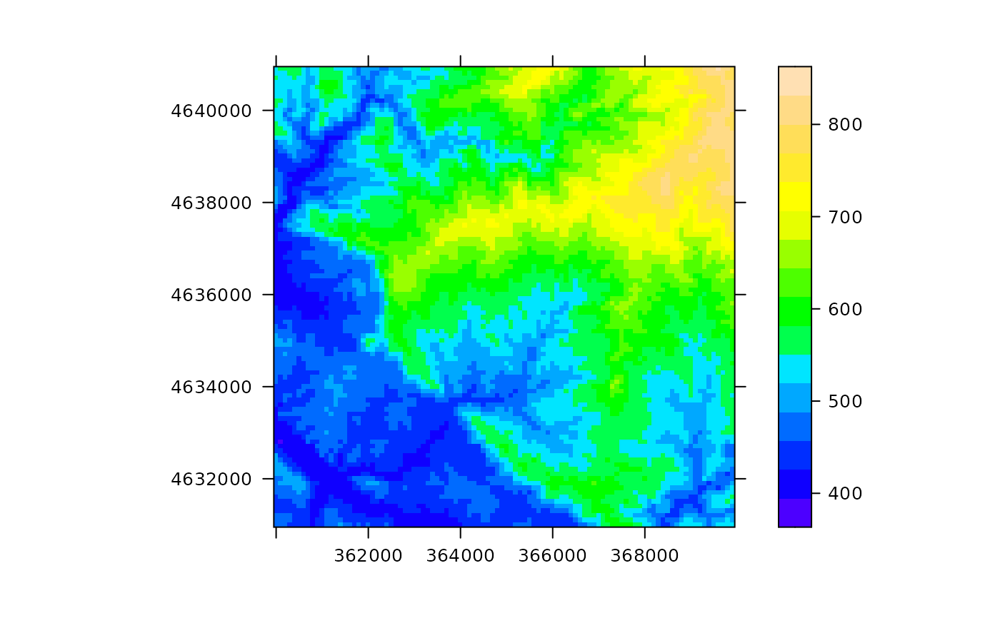
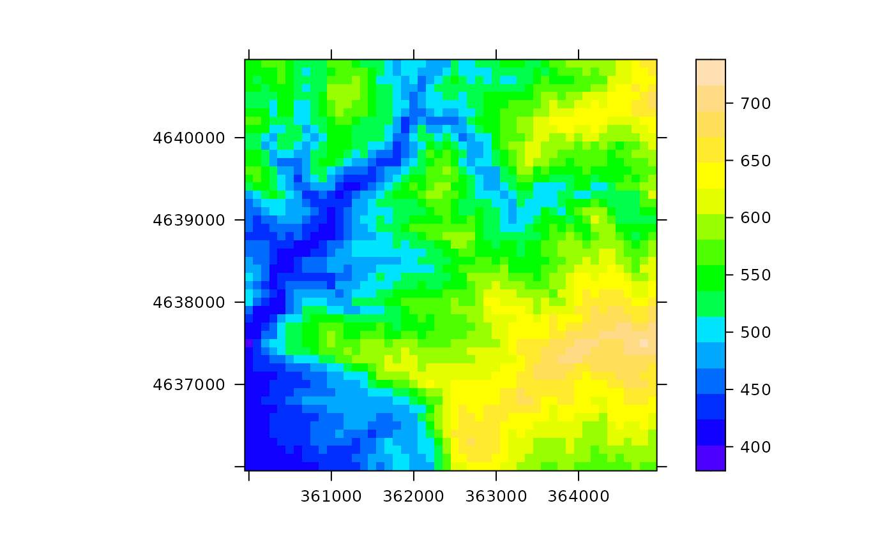

SpatialGridTopography.RdFunction SpatialGridTopography creates an object of class SpatialGridTopography-class containing topographic variables over a landscape.
SpatialGridTopography(grid, elevation, slope = NULL, aspect = NULL, proj4string = CRS(as.character(NA)))
| grid | An object of class |
|---|---|
| elevation | A vector of elevation values for all cells of the grid (in m.a.s.l.). |
| slope | A vector of slope angles for all cells of the grid (in degrees). If |
| aspect | A vector of aspect angles for all cells of the grid (in degrees from North clockwise ). |
| proj4string | An object of class |
Slope and aspect calculations were adapted from functions in package 'SDMTools', which used the approach described in Burrough & McDonell (1998).
The rate of change (delta) of the surface in the horizontal (dz/dx) and vertical (dz/dy) directions from the center cell determines the slope and aspect. The values of the center cell and its eight neighbors determine the horizontal and vertical deltas. The neighbors are identified as letters from 'a' to 'i', with 'e' representing the cell for which the aspect is being calculated. The rate of change in the x direction for cell 'e' is calculated with the algorithm:
[dz/dx] = ((c + 2f + i) - (a + 2d + g) / (8 * x_cell_size)
The rate of change in the y direction for cell 'e' is calculated with the following algorithm:
[dz/dy] = ((g + 2h + i) - (a + 2b + c)) / (8 * y_cell_size)
The algorithm calculates slope as: rise_run = sqrt ( [dz/dx]2 + [dz/dy]2 ]).
From this value , one can calculate the slope in degrees or radians as:
slope_degrees = ATAN (rise_run) * 57.29578
slope_radians = ATAN (rise_run)
Taking the rate of change in both the x and y direction for cell 'e', aspect is calculated using:
aspect = 57.29578 * atan2 ([dz/dy], -[dz/dx])
The aspect value is then converted to compass direction values (0-360 degrees).
Function SpatialGridTopography returns an object 'SpatialGridTopography-class'.
Miquel De Cáceres Ainsa, CREAF
Burrough, P. A. and McDonell, R.A., 1998. Principles of Geographical Information Systems (Oxford University Press, New York), p. 190.
data(examplegridtopography) #Display data spplot(examplegridtopography, variable="elevation", scales=list(draw=TRUE))#Grids can be subsetted sgt = examplegridtopography[1:50, 1:50]#> Warning: CRS object has comment, which is lost in output